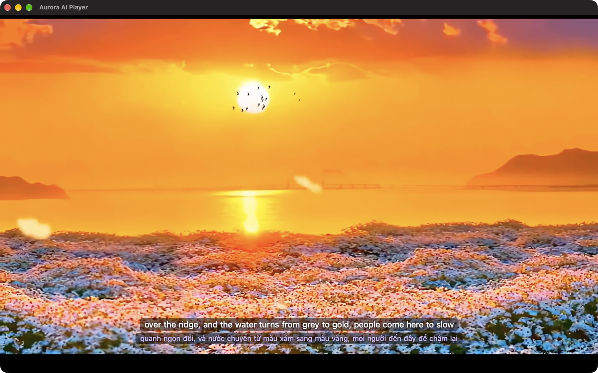
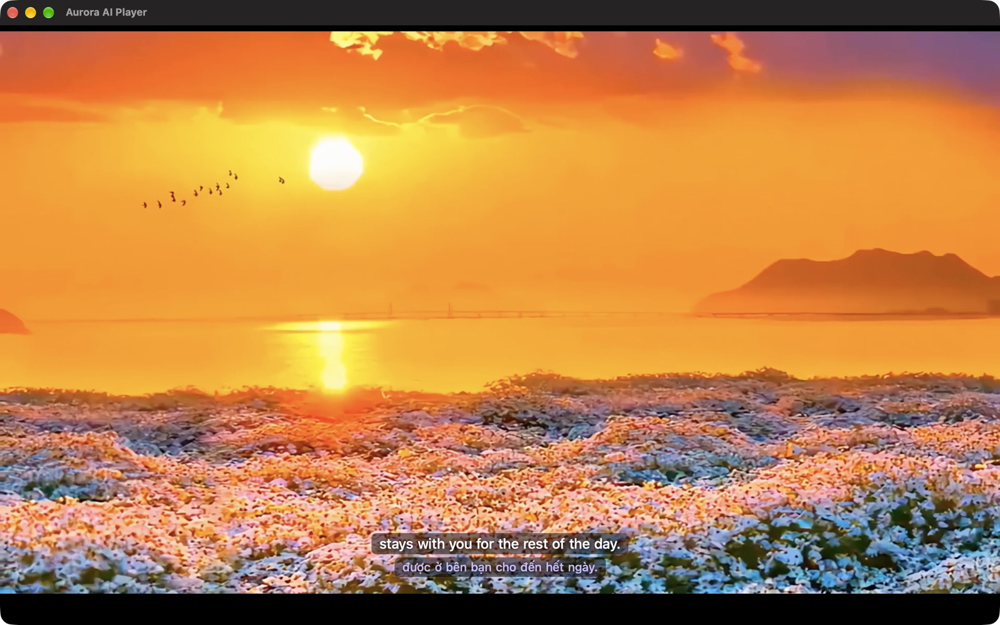
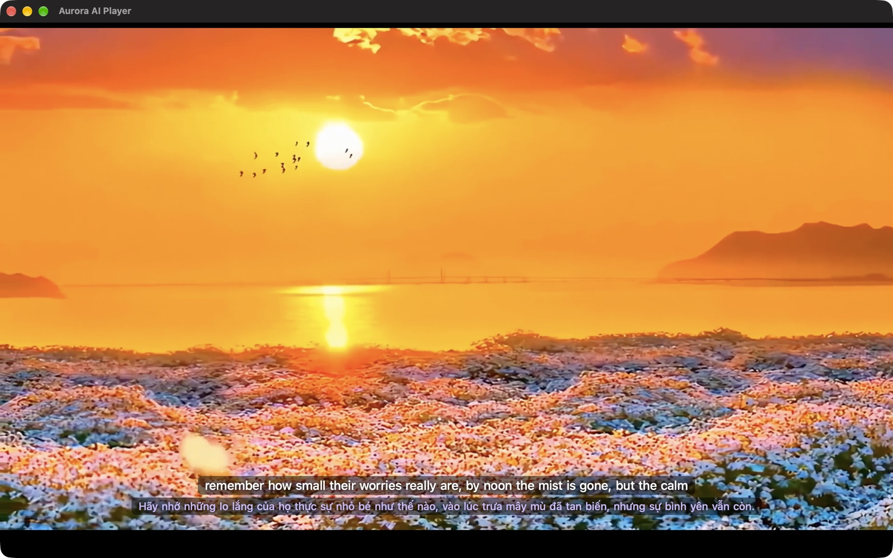

A clean, native video player that opens the MKV QuickTime refuses, then helps you understand what you hear: on-device AI subtitles, live translation and dual-language captions.

Dark, video-first, no clutter. Playback is free for everyone, forever, with no account.
MKV, AVI, TS, WebM, FLV, WMV and more, including AV1 and HEVC, through a built-in LGPL libmpv engine. MP4 and MOV stay on Apple's native engine.
Opens in a blink, scrubs with thumbnail previews, resumes where you left off. Picture in Picture, playlists, keyboard shortcuts.
Drop an .srt or .vtt next to the video and it loads. Adjust delay, size and position without leaving the picture.
One purchase unlocks everything below. Every new install gets all of it free for 14 days.
No subtitle file? Generate one. Apple Speech on macOS 26 or Whisper on any supported Mac transcribes the audio on-device. Nothing is uploaded, and the result is cached so it is instant next time.

Pick a language and the translation appears line by line as you watch, on-device with Apple Translation. Vietnamese, English, Chinese, Japanese, Korean, French, Spanish, German.
Prefer more natural, context-aware subtitles? Add your own Anthropic API key and Claude translates instead, billed to your account, never to ours.

Original on top, translation below. Read both at once or hide one when you want to test yourself.
Click any word in a subtitle to open the macOS dictionary. Works in every language your Mac has a dictionary for.
Press R to hear the current sentence again, set an A–B loop, slow the speed. Shadowing without hunting for the timeline.
Save a line with one key (S). Export the notebook to Anki as a ready-to-import deck, with original and translation on each card.
Subtitle styles, sizes and colors, accent colors for the interface, and export of generated subtitles as .srt to use anywhere.
No account, no analytics, no servers of ours. Your videos and subtitles never leave your Mac unless you choose Claude translation with your own key.
No subscription. The 14-day trial is not a subscription either: it never converts to a charge.
Requires an Apple silicon Mac running macOS 14 or later. Apple Speech and Apple Translation need macOS 26; Whisper covers macOS 14 and 15. Price shown in US dollars; the App Store shows your local price.